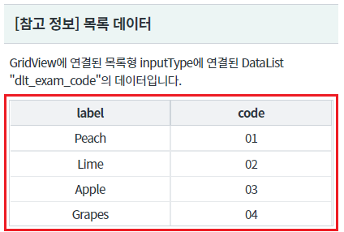
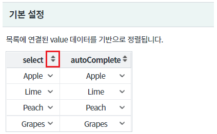
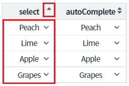
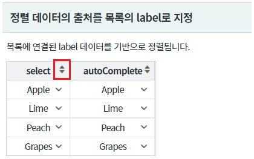
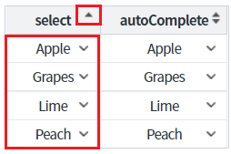
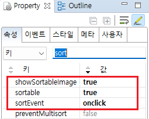
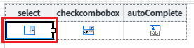
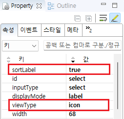
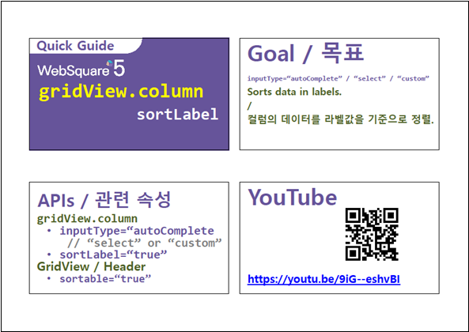

GridView의 바디 컬럼의 inputType이 목록(콤보)형인 경우 정렬할 데이터의 출처를 설정하는 예제입니다. 정렬할 데이터의 출처의 기본 설정값은 value입니다. 설정을 통해 label로 지정할 수 있습니다.
적용 가능한 inputType은 select, autoComplete입니다.
[기본 동작] 정렬 데이터의 출처를 목록의 value로 지정
정렬 데이터의 출처를 목록의 label로 지정
영역 [참고 정보 목록 데이터]의 GridView에 출력된 데이터를 확인합니다.
컬럼 "label" : 목록의 label에 연결
컬럼 "code" : 목록의 value에 연결
[브라우저(Chrome) 실행 예시]

영역 [기본 설정]의 GridView 헤더 컬럼의 정렬 아이콘을 클릭합니다.
[브라우저(Chrome) 실행 예시]

목록의 value를 기준으로 오름차순 정렬이 되는 것을 확인합니다.
[브라우저(Chrome) 실행 예시]

영역 [참고 정보 목록 데이터]의 GridView에 출력된 데이터를 확인합니다.
컬럼 "label" : 목록의 label에 연결
컬럼 "code" : 목록의 value에 연결
[브라우저(Chrome) 실행 예시]
영역 [정렬 데이터의 출처를 목록의 label로 지정]의 GridView 헤더 컬럼의 정렬 아이콘을 클릭합니다.
[브라우저(Chrome) 실행 예시]

목록의 label을 기준으로 오름차순 정렬이 되는 것을 확인합니다.
[브라우저(Chrome) 실행 예시]

GridView와 연결된 DataList 생성 및 연결 방법은 생략되었습니다.
STEP1. GridView의 속성을 정의합니다.
[필수] sortable="true" //gridView의 헤더 클릭을 통한 데이터 정렬 지원 여부
[선택] showSortableImage="true" //정렬 가능한 컬럼의 헤더에 정렬 이미지를 출력.
[선택] sortEvent="onclick" //[default: ondblclick, onclick] 정렬을 수행할 이벤트를 정의.
그림 1.웹스퀘어5 SP5 스튜디오의 Property View(속성창) 예시

inputType이 select, autoComplete인 경우 적용됩니다.
[필수] sortLabel="true" //label 값을 기준으로 정렬
[선택] viewType="icon" //컬럼의 inputType에 헤당하는 아이콘을 표시
그림 2.웹스퀘어5 SP5 스튜디오의 Design 탭 예시 - 바디 컬럼 선택

그림 3.웹스퀘어5 SP5 스튜디오의 Property View(속성창) 예시 - 바디 컬럼

[소스 코드 예시]
<!-- gridView 의 소스 본문 예시 --> <w2:gridView sortable="true" sortEvent="onclick" showSortableImage="true" dataList="data:dlt_exam_2"> <!-- 중략 --> <w2:gBody id="gBody1" style=""> <w2:row id="row2" style=""> <!-- 중략 --> <w2:column sortLabel="true" viewType="icon" id="select" inputType="select"> <w2:choices> <w2:itemset nodeset="data:dlt_exam_code"> <w2:label ref="label"></w2:label> <w2:value ref="code"></w2:value> </w2:itemset> </w2:choices> </w2:column> <!-- 중략 --> </w2:row> </w2:gBody> </w2:gridView>
[body column] sortLabel
sortable
showSortableImage
sortEvent
[body column] viewType
[웹스퀘어5 SP5 개발 가이드] GridView
링크 : https://docs1.inswave.com/sp5_user_guide/86bdcf48029b958b
[웹스퀘어5 SP5 개발 가이드] GridView 정렬
링크 : https://docs1.inswave.com/sp5_user_guide/86bdcf48029b958b#7bf6021f821511f7
[웹스퀘어5 SP5 개발 가이드] GridView - 라벨 값을 기준으로 정렬
링크 : https://docs1.inswave.com/sp5_user_guide/86bdcf48029b958b#8f1bd743c0af0bdd
GridView - 라벨 값을 기준으로 정렬
링크 : https://youtu.be/9iG--eshvBI
